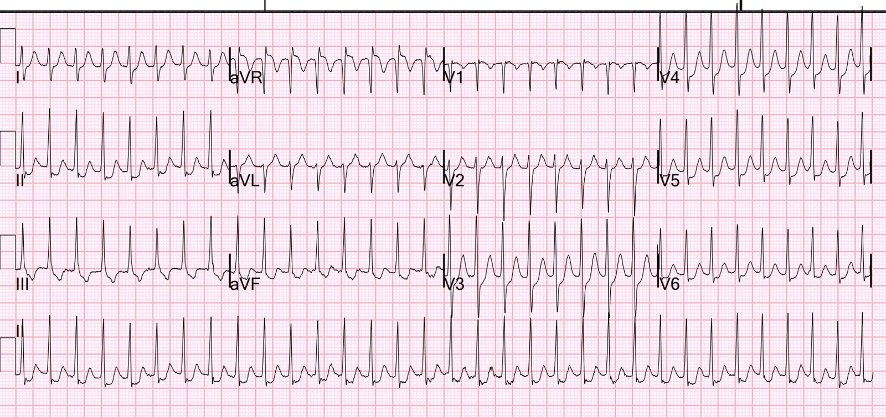
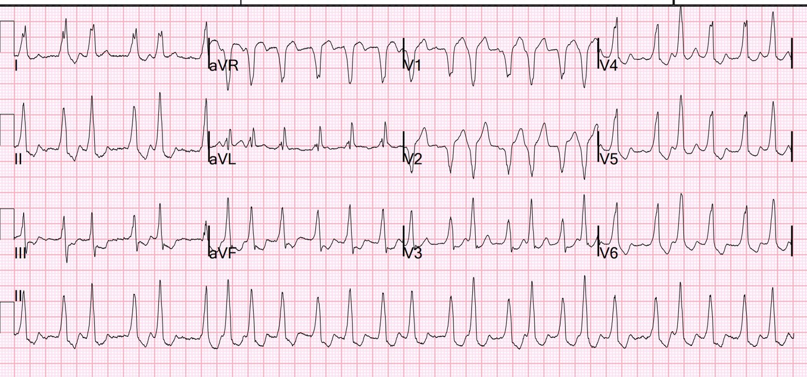
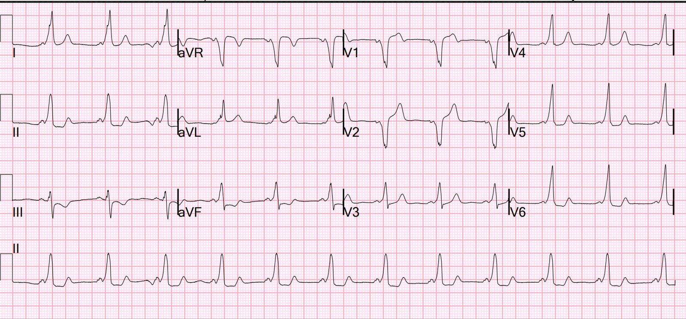
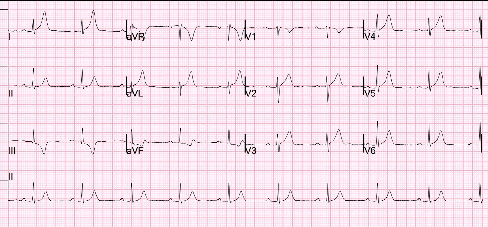
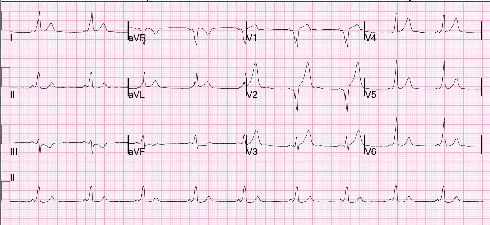
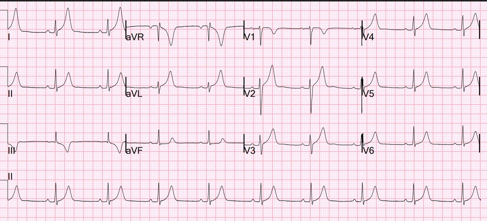
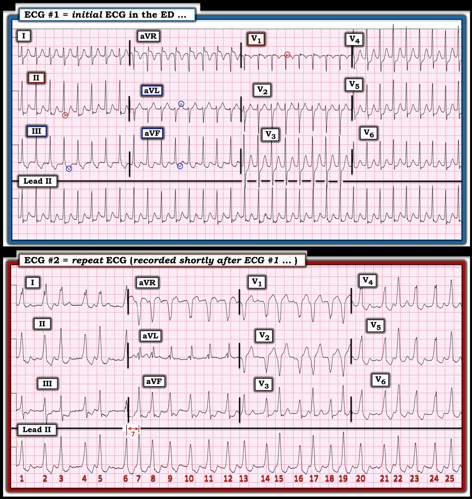

08/05/2024 — Một nam thanh niên hồi hộp đánh trống ngực
Bản dịch tiếng Việt của bài "A young man with palpitations." – Dr. Smith’s ECG Blog. Giữ nguyên toàn bộ 8 hình ảnh của bản gốc.
Một bệnh nhân nam ngoài 30 tuổi đến khám vì đau ngực, hồi hộp đánh trống ngực (palpitations) và khó thở. Anh đã có những triệu chứng tương tự trong 4 năm nhưng chưa bao giờ được thăm khám.
Đây là điện tâm đồ lúc nhập viện của anh, được gửi cho tôi theo thời gian thực, cùng với điện tâm đồ thứ 2 bên dưới:


Đều, Hẹp, Nhanh, không có sóng P. SVT kịch phát (PSVT).
Rất khó phân biệt đây là:
1) AVNRT hay
2) AVRT xuôi chiều (orthodromic AVRT)
(AVRT xuôi chiều = WPW với dẫn truyền xuôi dòng qua nút AV và ngược dòng lên qua một đường phụ (accessory pathway))
Xem phần bàn luận của Ken Grauer bên dưới về cách phân biệt AVNRT với AVRT xuôi chiều.
Ngay sau khi đến viện, bệnh nhân tự chuyển sang nhịp này (cũng được gửi cho tôi, cùng với điện tâm đồ đầu tiên):


Bạn nghĩ gì?
Hai điện tâm đồ trên được nhắn cho tôi kèm tin nhắn: “Anh chàng trẻ tuổi vào viện trong cơn SVT nhưng giờ lúc có lúc không nhịp nhanh QRS rộng không đều. — không chắc là VT đa dạng hay rung nhĩ kèm WPW.”
Câu trả lời của tôi: “Chắc chắn không phải VT đa dạng. Chắc chắn là rung nhĩ. Có lẽ là WPW nhưng rất chậm so với rung nhĩ kèm WPW. Tôi sẽ chỉ sốc điện chuyển nhịp.”
Smith: nhịp không đều hoàn toàn, không có sóng P. Có sóng delta và QRS đa dạng (nhưng KHÔNG phải VT đa dạng!). Vậy đây trông giống WPW kèm rung nhĩ. Điều bất thường là tần số không THỰC SỰ nhanh như ta vẫn chờ đợi khi có rung nhĩ kèm đường phụ. Khoảng R-R ngắn nhất mà tôi thấy là giữa nhát thứ 6 và nhát thứ 7, bằng 280 ms, không ngắn đến mức nguy hiểm.
Dù vậy, bạn KHÔNG BAO GIỜ được cho thuốc ức chế nút AV khi rung nhĩ kèm WPW:
1. Lý do tránh thuốc ức chế nút AV trong WPW là ngoài tác dụng ức chế nút AV, chúng thực ra còn tăng cường dẫn truyền qua đường phụ (AP) do rút ngắn thời kỳ trơ, có thể gây rung thất (VF).
2. Adenosine được xem là an toàn để cắt cơn AVRT trong WPW, nhưng tác dụng gây loạn nhịp (proarrhythmia) của adenosine hiếm khi có thể gây rung nhĩ, vì vậy đừng cho thuốc ức chế nút AV ở bệnh nhân WPW trừ khi đã dán sẵn miếng dán khử rung.
Các đặc điểm cốt yếu của rung nhĩ kèm WPW là:
1. Không đều hoàn toàn
2. Đa dạng
3. Rộng
4. Có vài khoảng R-R rất ngắn
Không bao giờ cho thuốc ức chế nút AV khi rung nhĩ kèm WPW; điều đó có thể dẫn tới rung thất. Nghĩa là KHÔNG dùng thuốc chẹn kênh calci, thuốc chẹn beta, adenosine hay digoxin.
Có thể chuyển nhịp bằng thuốc (thường là procainamide), nhưng tại sao bạn lại muốn làm vậy? Chỉ khi bạn không thể thực hiện an thần thủ thuật hoặc bệnh nhân từ chối.
Vì vậy, bệnh nhân được sốc điện chuyển nhịp (an thần bằng etomidate. Tôi thích dùng propofol liều thấp, vừa đủ để gây quên, nhưng không đủ để gây hạ huyết áp nặng).
Đây là điện tâm đồ sau sốc điện chuyển nhịp:


Tiền kích thích rõ ràng (sóng delta do đường phụ, “bó tắt” (bypass tract)). Tiền kích thích làm khoảng PR ngắn.
Ghi chú của bác sĩ điện sinh lý: “Trong bối cảnh rung nhĩ tiền kích thích, chúng tôi khuyến nghị tiến hành lập bản đồ và triệt đốt đường phụ (đặc biệt khi có các đặc điểm nguy cơ cao, bao gồm khoảng R-R tiền kích thích ngắn nhất của anh < 250 ms). Có vẻ nhiều khả năng đường phụ của anh nằm ở vùng trước vách, điều này làm tăng nguy cơ tổn thương nút AV.”
Giải thích thêm từ bác sĩ điện sinh lý:
“Điện tâm đồ chỉ ghi được dữ liệu trong 10 giây, vì vậy dải nhịp dài là rất cần thiết để bảo đảm có đủ dữ liệu. May mắn là ở phòng ổn định bệnh nhân, họ đã ghi một dải nhịp dài (Smith: tôi không được xem và không đưa ra ở đây) trong lúc rung nhĩ và một số khoảng R-R rất ngắn, gần 250 msec.“
Anh được đưa đi triệt đốt ngay trong ngày tại phòng thăm dò điện sinh lý (EP), nhưng (giải thích từ bác sĩ điện sinh lý) điện tâm đồ này đã được ghi lại:


Không còn tiền kích thích, vì vậy không tiến hành triệt đốt
Bác sĩ điện sinh lý giải thích: “Những đường phụ này có thể là các sợi rất nông, và trong lần thủ thuật đầu tiên, nó đã bị “chạm” cơ học trước khi bật năng lượng triệt đốt, vì vậy KHÔNG TIẾN HÀNH TRIỆT ĐỐT khi không còn tiền kích thích, do vị trí nguy cơ cao. Dù đã chờ một giờ, dẫn truyền qua đường phụ vẫn không trở lại (nhưng chúng luôn luôn trở lại sau một lần chạm cơ học như vậy). Vì vậy, thủ thuật được làm lại bằng triệt đốt áp lạnh (cryoablation) sau khi dẫn truyền qua đường phụ đã trở lại.”
Sáng hôm sau, điện tâm đồ này được ghi lại:


Bạn nghĩ gì?
Sóng delta đã trở lại. Có tiền kích thích tái phát.
Đã tiến hành triệt đốt.
Anh được đưa đi triệt đốt lần nữa và điện tâm đồ này được ghi lại:


Đã trở về bình thường.
Anh được xuất viện.

===================================
BÌNH LUẬN CỦA TÔI, bởi KEN GRAUER, MD (8/5/2024):
===================================
Tôi thấy ca hôm nay cực kỳ thú vị ở nhiều điểm liên quan tới các nhịp SVT vào lại, có hoặc không có sự tham gia của AP (đường phụ – Accessory Pathway). Tôi sẽ bổ sung các điểm sau vào phần bàn luận xuất sắc của BS. Smith.
- Để cho rõ, trong Hình 1 — tôi đã ghi nhãn 2 bản ghi đầu tiên của ca hôm nay.


Có thể phân biệt AVNRT với AVRT xuôi chiều không?
Như BS. Smith đã nêu — chẩn đoán phân biệt chính giữa các nhịp SVT vào lại đều là giữa AVNRT (nhịp nhanh vào lại nút nhĩ thất – AtrioVentricular Nodal Reentry Tachycardia — trong đó vòng vào lại nằm gọn bên trong nút AV) — với AVRT xuôi chiều (nhịp nhanh vào lại nhĩ thất – AtrioVentricular Reciprocating Tachycardia — trong đó vòng vào lại trước tiên đi xuống theo đường dẫn truyền bình thường qua nút AV, rồi dẫn truyền ngược trở lại nhĩ qua một đường phụ (Accessory Pathway)).
- Như tôi đã minh họa trong Bình luận của tôi ở cuối trang của bài ngày 6 tháng Ba năm 2020 trên Dr. Smith’s ECG Blog — tuy không phải tuyệt đối chính xác, việc thấy khoảng RP’ rất ngắn gợi ý cơ chế của nhịp SVT vào lại là AVNRT, trong đó xung động đi ngược trở lại nhĩ qua đường “nhanh” của nút AV. Đó là vì khi vòng vào lại nằm hoàn toàn bên trong nút AV — chỉ cần thời gian tối thiểu để quay trở lại nhĩ.
- Ngược lại — việc thấy khoảng RP’ dài vừa phải gợi ý cơ chế của nhịp SVT vào lại là AVRT xuôi chiều, trong đó một đường phụ “ẩn” (concealed AP) có thể tham gia vào vòng vào lại. Vì đường phụ nằm bên ngoài nút AV — thời gian để đi hết vòng vào lại và dẫn truyền trở lại nhĩ (ngược dòng) dài hơn so với khi toàn bộ vòng vào lại nằm gọn bên trong nút AV.
Như tôi minh họa trong bài ngày 6 tháng Ba năm 2020 — dẫn truyền ngược dòng thường có thể thấy được trong một nhịp SVT vào lại!
- NẾU bạn tìm dẫn truyền sóng P ngược dòng trong một nhịp SVT đều — Bạn sẽ bắt đầu thấy nó thường xuyên hơn nhiều so với bạn tưởng! Đôi khi — nhận ra dẫn truyền ngược dòng có thể cung cấp manh mối MẤU CHỐT về cơ chế của một cơn nhịp nhanh.
- Để TÌM sóng P ngược dòng: — i) Tìm ở các chuyển đạo thành dưới một khía nhỏ âm xuất hiện ngay ở cuối QRS, hoặc khá sớm sau đó; hoặc, ii) Tìm một khía nhỏ dương ở chuyển đạo aVR và/hoặc chuyển đạo aVL và/hoặc chuyển đạo V1; và, iii) Xác nhận rằng khía mà bạn nhận ra trong nhịp SVT đều thực sự phản ánh hoạt động nhĩ ngược dòng (chứ không phải là một phần của QRS hay do nhiễu) — bằng cách ghi nhận khía này không còn nữa sau khi chuyển về nhịp xoang. (Hình 2 của tôi trong bài ngày 6 tháng Ba năm 2020 minh họa cách xác nhận này).
Về CA BỆNH hôm nay:
Thật không may — tôi thấy điện tâm đồ đầu tiên của ca hôm nay mơ hồ (equivocal) xét về việc tìm sóng P ngược dòng:
- Như thấy trong Hình 1 — nhịp trên điện tâm đồ đầu tiên hôm nay là một SVT đều (tức nhịp nhanh phức bộ hẹp) tần số ~190/phút, không có sóng P xoang.
- Ban đầu tôi nghĩ khía nhỏ âm ngay ở cuối QRS ở chuyển đạo II — và khía nhỏ dương ngay ở cuối QRS ở chuyển đạo V1 — đều là sóng P ngược dòng với khoảng RP’ rất ngắn (trong các vòng tròn ĐỎ ở những chuyển đạo này). Nếu vậy — điều này gợi ý mạnh mẽ AVNRT thể “chậm-nhanh” (cho đến nay là dạng AVNRT thường gặp nhất) là cơ chế của nhịp ban đầu hôm nay.
- Tuy vậy — tôi nghĩ các sóng âm nhọn hơn dự kiến ở chuyển đạo III và aVF — và đỉnh nhọn của sóng T dương ở chuyển đạo aVL — có thể là sóng P ngược dòng, và khi đó khoảng RP’ lại dài vừa phải (trong các vòng tròn XANH ở những chuyển đạo này).
- ĐIỀU CỐT LÕI: Với các dấu hiệu mâu thuẫn trong việc tìm hoạt động nhĩ ngược dòng — tôi không thể phân biệt AVNRT với AVRT xuôi chiều chỉ dựa trên điện tâm đồ #1. Đôi khi bạn có thể phân biệt AVNRT với AVRT xuôi chiều — nhưng không phải ở bản ghi đầu tiên hôm nay.
TẠI SAO PHẢI QUAN TÂM cơ chế là AVNRT hay AVRT xuôi chiều?
Dù xin nhấn mạnh rằng xử trí ban đầu nói chung của AVNRT và AVRT xuôi chiều là tương tự nhau — vẫn có một số khác biệt cần lưu ý, có thể đóng vai trò trong việc ra quyết định điều trị.
- WPW được nhận diện trên điện tâm đồ nhờ sự hiện diện của 3 dấu hiệu: i) Khoảng PR ngắn; ii) Sóng delta ở một số chuyển đạo; và, iii) QRS giãn rộng.
- Điều quan trọng cần hiểu là bệnh nhân có AP không phải lúc nào cũng biểu hiện đủ 3 dấu hiệu đặc trưng của tiền kích thích hoàn toàn hay chiếm ưu thế. Thay vào đó — Bệnh nhân có AP đôi khi có thể biểu hiện tiền kích thích một phần hoặc thậm chí không có tiền kích thích (với tỷ lệ phần trăm tương đối của các xung đi qua AP so với qua đường nút AV bình thường thay đổi rất nhiều). NẾU mức độ tiền kích thích tương đối tại một thời điểm nào đó là tối thiểu — thì sóng delta, PR ngắn lại và QRS giãn rộng có thể chỉ phát hiện được rất khó khăn (nếu có phát hiện được).
- Các AP có thể dẫn truyền đi tới (xuôi dòng) và/hoặc đi lui (ngược dòng). Dù AP thường có khả năng dẫn truyền theo cả hai chiều — dẫn truyền đi tới hoặc đi lui có thể không xảy ra được ở một số bệnh nhân. Điều này dẫn tới khái niệm AP “ẩn” (concealed AP) — trong đó chỉ có thể dẫn truyền ngược dòng qua AP.
- Có tới 15% bệnh nhân có nhịp SVT vào lại đều được chuyển đi triệt đốt qua ống thông có thể có một AP “ẩn”, ở đó không bao giờ thấy sóng delta vì không thể dẫn truyền đi tới (xuôi dòng) qua AP của họ (Pappone và Santinelli — ESC: tháng Bảy năm 2018).
- Điểm MẤU CHỐT: Tổng hợp các khái niệm ở những gạch đầu dòng trên có nghĩa là trong một tỷ lệ đáng kể các trường hợp khi điều trị một bệnh nhân mới có nhịp SVT vào lại đều, nhưng không có dấu hiệu rõ ràng của hoạt động nhĩ — thì dù chưa bao giờ thấy sóng delta, bệnh nhân vẫn có thể có một AP ẩn (tức là, thay vì AVNRT — nhịp SVT đều đó có thể là AVRT xuôi chiều).
- Tin “tốt” — là điều trị ban đầu cho những bệnh nhân có nhịp SVT vào lại đều như vậy là giống nhau (tức là, Adenosine, Verapamil/Diltiazem, thuốc chẹn ß) — vì các thuốc ức chế nút AV sẽ cắt được vòng vào lại ở cả AVNRT lẫn AVRT xuôi chiều.
- Tin “kém tốt hơn” — là ở tới 1/3 bệnh nhân AVRT xuôi chiều — AFib tự phát có thể xuất hiện vào một thời điểm nào đó — có lẽ do nhịp nhanh vòng vào lại qua trung gian AP “khởi phát” AFib (Ma và cs. — Exp Clin Cardiol 9(3): 196, 2004 — và Silverman và cs. trên J Investig Med: tháng Một năm 2018). Và, như BS. Smith đã nêu — việc dùng các thuốc ức chế nút AV (tức là, Adenosine, Verapamil/Diltiazem, thuốc chẹn ß) là chống chỉ định ở bệnh nhân có AFib và WPW — vì ức chế đường nút AV bình thường có thể làm dẫn truyền xuôi dòng qua AP càng tăng tốc hơn, có thể khiến nhịp chuyển xấu thành rung thất (VFib).
- Tin “kém tốt hơn” khác — là ít nhất về lý thuyết có nguy cơ việc dùng thuốc ức chế nút AV để điều trị một SVT đều có thể thúc đẩy AFib nếu bệnh nhân có một AP “ẩn” (tức là, nếu thay vì AVNRT — nhịp đó là AVRT xuôi chiều). May thay — việc thúc đẩy AFib do cho thuốc ức chế nút AV với một SVT vào lại mà hóa ra là AVRT xuôi chiều là hiếm (và đồng thuận vẫn là điều trị các nhịp SVT vào lại bằng thuốc ức chế nút AV).
Còn Nhịp trên điện tâm đồ #2 thì sao?
Tôi bị cuốn hút bởi sự xuất hiện tự phát của nhịp trên điện tâm đồ #2 — chỉ một lúc ngắn sau điện tâm đồ #1 mà không dùng bất kỳ thuốc nào!
- Như BS. Smith đã nêu — nhịp trên điện tâm đồ #2 không đều hoàn toàn và không có sóng P. Dù tôi ngần ngại chẩn đoán sóng delta khi không có sóng P xoang (vì dẫn truyền kiểu LBBB đôi khi có thể biểu hiện trát đậm phần đầu QRS) — các đặc điểm bổ sung là hình dạng QRS thay đổi — và việc thấy một số khoảng R-R rất ngắn xen kẽ với một số khoảng R-R dài hơn bất ngờ (tức là, giữa nhát #5-6) ở người trẻ tuổi này — gợi ý WPW kèm AFib (dù chẩn đoán xác định WPW chưa được đưa ra cho tới khi có điện tâm đồ thứ 3, cho thấy trở lại nhịp xoang với PR ngắn, sóng delta và QRS rộng trông tương tự).
- ĐIỂM THEN CHỐT (PEARL) #1: Như chúng tôi đã nhấn mạnh ở các bài trước (Xem bài ngày 11 tháng Ba năm 2020 đã đăng) — có thể chẩn đoán ngay WPW khi thấy AFib với QRS rộng và đáp ứng thất cực kỳ nhanh (có lúc đạt tần số trong khoảng ~220-250/phút!).
- Khác với PMVT (nhịp nhanh thất đa dạng — PolyMorphic Ventricular Tachycardia), trong đó hình dạng QRS thường thay đổi rõ rệt từ nhát này sang nhát kế tiếp — hình dạng QRS thay đổi thường thấy trong WPW kèm AFib có xu hướng kín đáo hơn (do tỷ lệ phần trăm tiền kích thích tương đối dao động ở mức vừa phải).
- ĐIỂM THEN CHỐT (PEARL) #2: Không phải mọi bệnh nhân WPW đều có nguy cơ cao xuất hiện các rối loạn nhịp nhanh có thể đe dọa tính mạng. Nguy cơ xuất hiện rung thất (VFib) trong lúc AFib ở bệnh nhân WPW tăng lên rất nhiều khi SPERRI (khoảng R-R tiền kích thích ngắn nhất — Shortest Pre-Excited R–R Interval) đo được dưới 220-250 ms. Điều này tương ứng với khoảng R-R ngắn nhất chỉ dài hơn một ô lớn một chút. Chúng ta không thấy điều này trên điện tâm đồ #2 — vì khoảng R-R ngắn nhất dài 7 ô nhỏ ( = 280 ms — như tôi đã ghi chú giữa nhát #6-7).
- Đáp ứng thất nhanh đến mức nào khi có AFib ở bệnh nhân WPW sẽ phụ thuộc vào đặc tính dẫn truyền xuôi dòng của AP. Tần số chung của AFib trên điện tâm đồ #2 là ~150/phút (tức là, Có 25 nhát trong dải nhịp chuyển đạo II dài 10 giây ==> 25 X6 = 150/phút). Vì đáp ứng thất trên điện tâm đồ #2 tương đương với khoảng tần số của bất kỳ bệnh nhân nào mới khởi phát AFib — chẩn đoán xác định WPW trong ca hôm nay chưa được đưa ra cho tới khi có điện tâm đồ thứ 3.
Những ĐIỂM CUỐI CÙNG trong Ca bệnh Hôm nay:
- Dù giá trị SPERRI trong lúc AFib ở ca hôm nay không dưới 250 ms — vẫn có chỉ định triệt đốt qua ống thông vì người đàn ông trẻ này có rất nhiều triệu chứng với không chỉ một, mà hai rối loạn nhịp nhanh liên quan đến WPW (AVRT xuôi chiều và AFib).
- Có thể có nhiều hơn một AP! (Goyal và cs. — StatPearls: tháng Bảy năm 2023). Dù nhiều AP ở cùng một bệnh nhân là không thường gặp — ban đầu tôi đã tự hỏi liệu đó có phải là một khả năng ở bệnh nhân hôm nay hay không, do cần triệt đốt lại vào ngày hôm sau. Dù vậy — việc hình dạng QRS rộng gần như giống hệt nhau trong nhịp xoang sau mỗi lần triệt đốt gợi ý bệnh nhân này không có nhiều hơn một AP (và trong phần bàn luận của BS. Smith, ở mục Điện sinh lý giải thích (Electrophysiology Explains) — chúng ta biết được lý do bác sĩ tim mạch điện sinh lý (EP) làm lại thủ thuật vào ngày hôm sau).
- Cuối cùng — Bạn có để ý các sóng T rất cao ở nhiều chuyển đạo sau mỗi lần triệt đốt không? Dấu hiệu này điển hình cho hình ảnh sóng T trí nhớ (memory) sau triệt đốt — thường được xem là bằng chứng của một lần triệt đốt thành công (Silverman và cs. — J Investig Med: tháng Một năm 2018).